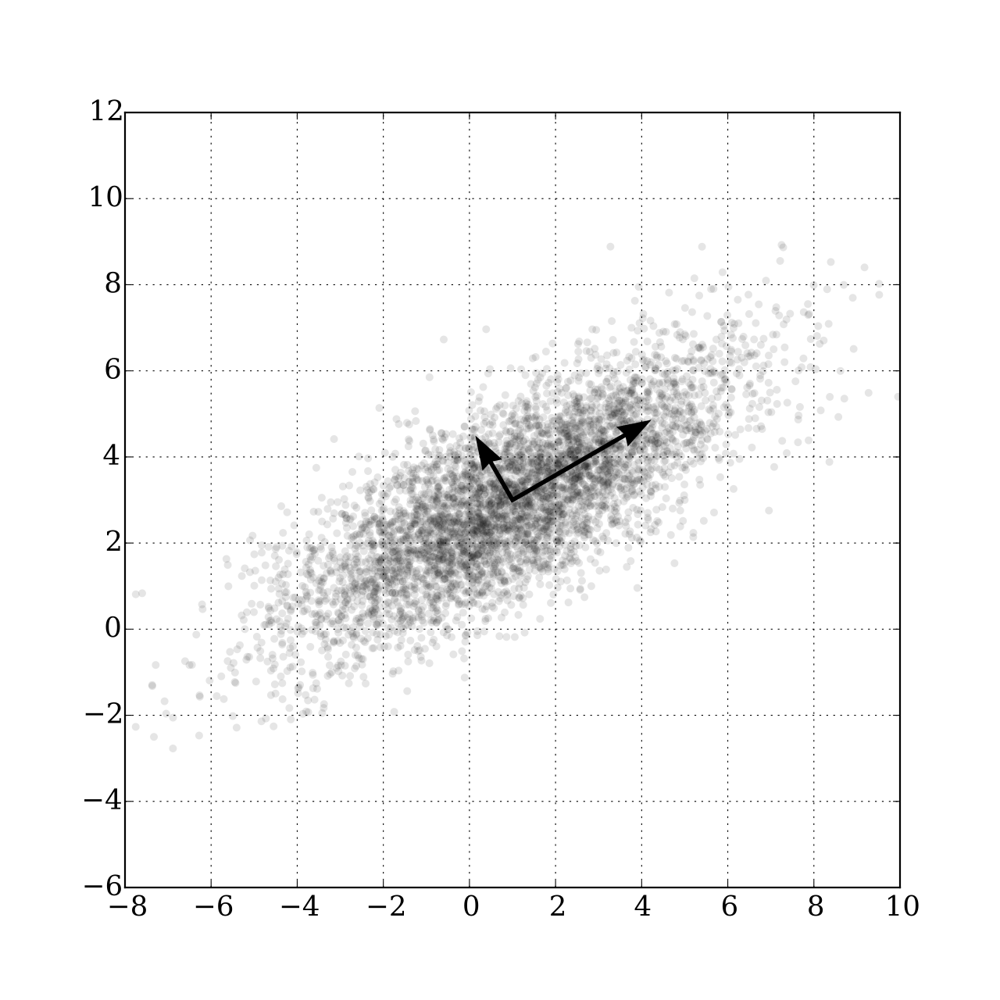
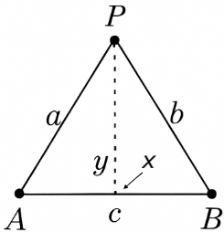

Just Enough Data
Ready for a perspective that might change how you see data?
Menzies's 4th Law: For Software Engineering (SE), the best thing to do with most data is to throw it away.
(Now, I'm talking about tasks like regression, classification, and optimization. Those fancy generative AI models that write poems or paint pictures? They do seem to gobble up billions of data points, fair enough.)
For many common problems, if you give me a data table, I'm telling you: chopping out rows and columns often makes your models better. Sounds nuts, right? But many AI gurus have found that a tiny set of 'key' variables calls the shots for the rest of the model. Nail these keys, and controlling the whole shebang becomes a walk in the park.
This isn't some new fad. These "keys" have been popping up in AI for ages, wearing different disguises: principal components, variable subset selection, narrows, master variables, and backdoors.
In 1895, the Italian economist Vilfredo Pareto coined his famous Pareto Principle when he said 80% of the effects come from 20% of the causes. This result pops up everywhere: e.g. 80% of software bugs might come from 20% of modules, 80% of sales from 20% of clients., etc,
(Actually, it often feels even more extreme. I often do not see 80:20 but more like 1000:1 since, in my experiences, a tiny fraction of factors dictates almost everything.)
Moving forward now to 1902, Pearson noticed that even in datasets with many dimensions, a handful of principal components captured the main "drift" of the data. For example, in the data shown at right, simply looking left-to-right or up-to-down (along the original axes) might not capture the overall direction or main variation in the data. Instead, Pearson's PCA (principal component analysis) finds a new, synthesized dimension. This single synthesized dimension (see the big arrow, at right) is often the best way to model the data's primary structure
Pearson's math for PCA might make your eyes glaze over, but the core idea is pretty simple. If you want to see the "direction" of your data rows:
- Figure out a way to measure the distance between rows1.
- Draw a line between two rows that are super far apart, let's call them A and B.
- Draw a second line at a right angle to that first one.
- Plot every other data point based on where it lands relative to these two lines2.
Check out this analysis on a spreadsheet with 20 columns and 800 rows describing software classes (think "lines of code," "number of unique symbols," etc.). The red dots are code with known bugs.
Now imagine yourself trying to understand the raw data (800 rows, 20 numbers). All you might see is a jumbled mess. But after this trick, everything lines up like soldiers on parade, with the bad-boy defective codes clearly visible on the right.
The lesson is crystal clear: problems, and the data they spit out, often have a simpler, hidden structure. And you can use this simplicity to your advantage.
For instance:
-
Amarel's Narrows (1960s): Back in the '60s, Amarel spotted "narrows" in search problems – tiny sets of essential variable settings. Miss these, and you're lost [11]. His trick? Create "macros" to jump between these narrows, like secret passages in a maze, speeding up the search big time.
-
Kohavi & John's Variable Pruning (1990s): Fast forward to the '90s, Kohavi and John showed you could chuck out up to 80% of variables in some datasets and still get great classification accuracy [13]. Sound familiar? It's Amarel's idea again: focus on the VIP variables, not the whole crowd.
-
Crawford & Baker's ISAMP (1990s): Around the same time, constraint satisfaction folks found that "random search with retries" was surprisingly effective. Crawford and Baker's ISAMP tool would randomly poke around a model until it hit a dead end [12]. Instead of fussing, ISAMP would just note where it got stuck, hit reset, and try a different random path. Why did this wacky method work? They figured models have a few "master variables" (our keys!) pulling the strings. Trying to check every setting is a waste of time if only a few matter. If you're stuck, don't tiptoe – jump to a whole new area.
-
Williams et al.'s Backdoors: Williams and his colleagues found that if you run a random search enough times, the same few variable settings pop up in all good solutions [10]. Set these magic variables first, and crazy-long searches suddenly became quick and easy. They called this the "backdoor" to reducing computational complexity. Pretty tricky, right?
-
Modern Feature Selection: Today's machine learning is built on this. Techniques like LASSO regression (which shrinks less important variable coefficients, sometimes to zero) or using feature importance scores from decision trees are all about finding and focusing on those powerhouse variables.
-
Knowledge Distillation: Another cool, modern take on this is knowledge distillation. Here, a large, complex 'teacher' model (trained on tons of data) transfers its 'knowledge' to a much smaller, simpler 'student' model. The student model learns to mimic the teacher's outputs, effectively capturing the essential insights without all the bulk. It's like getting the CliffNotes version of a massive textbook, but it still aces the test.
Other work in semi-supervised learning backs this up: you don't need to obsess over all your data. This field leans on a few cool ideas:
- Continuity/Smoothness Assumption: Points close together probably share the same label. No big jumps in meaning for tiny data shifts.
- Cluster Assumption: Data likes to hang out in clumps. Points in the same clump likely share a label. Decision boundaries should fall in the sparse areas between clumps.
- Manifold Assumption: Your high-dimensional data often chills out on a simpler, lower-dimensional surface (the "manifold"). These assumptions basically mean your data isn't a completely random mess; it has structure.
If you know about the manifold assumption [73] and the Johnson-Lindenstrauss lemma [74] (which says you can project high-D data to lower-D space while mostly preserving distances), you're probably nodding along. But the data slashing you can do in, say, SE data is truly mind-blowing.
For instance, Chen, Kocaguneli, Tu, Peters, and Xu et al. found they could predict GitHub issue close times, effort, and defects even after ditching labels for a whopping 80%, 91%, 97%, 98%, and even 100% (respectively) of their project data [65, 70-72, 75]. Massive datasets with thousands of rows? Sometimes, just a few dozen samples will do the trick [76] – maybe because software project data is full of repeating patterns [78] or follows power laws [77] (where a few items are hugely frequent/important, and most are rare).
So, next time you're drowning in data, remember the Great Data Toss-Away. Less can seriously be more.
-
According to David Aha, the distance between two points A,B is \(\sum_i(D(A_i,B_i)^2)^{0.5}\) (calculated over all the independent x columns). For symbolic columns, \(D(x,y) = x!=y\). For numerics, \(D(x,y)=abs(x′−y′)\) where x' is x normalized 0..1 min..max. For missing values, assume maximum distances. For example, if x,y are both missing, then D=1. If one is missing then we make the assumption that maximizes the distance; e.g.: x=x if x!="?" else (1 if y<0.5 else 0) ↩
-
Let A,B be  two distance points, separated by distance c. Let a point P have a distance a,b to the points A,B. The cosine rule says P has an x position \(x=\frac{a^2 + c^c - b^2}{2c}\) and Pythagoras says P has a y position of \(y=(a^2-x^2)^{0.5}\). ↩